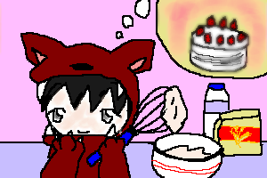

今回のテーマ、『絵本の中のてれび戦士』は管理人の期待以上に皆様に素敵な作品をた〜くさん頂きました！
全作品掲載のVol.2です！
管理人の絵も混ぜて、ジャンル別に載せたいと思います。
姫＆女の子シリーズ
|
October.2002
上：左から『眠れない(笑)森の里穂姫』by管理人／『七世in秘密の花園』byぶぅびぃさん
下：左から『ありちゃんinハードボイルドオズの世界』 by管理人／『シンデレラ七世』byめろんさん
またもや勝手に命名させて頂きました。すみません。
左上の里穂、待ち切れなくてちょっと起きてみた眠り姫です(笑)。
ぶぅびぃさんの七世は、「秘密の花園」をテーマに持って来られた時、
「やられた！」と思いましたね(笑)。すごく好きなのに思いつきませんでした。
七世本人はもちろん、この衣装と髪型が本当に好きで是非とも本人にやってほしいです。
一方こちらは、シンデレラになった七世。七世モテモテです♪
めろんさんも、いつも可愛らしい衣装を着せてくれるので嬉しいです。
このドレスも私が着たいです。ティアラも可愛いです。
ハードボイルドドロシーなありちゃんは、最初からネタを考えてました。
今回のテーマの中を決めた時、どれかを必ず「ハードボイルド化」しようと思ってたんです。
役立たずな仲間（カカシ・ブリキ男）に苛立ったありちゃんが
自ら、マシンガンで悪い魔女を撃退！なシーンです(笑)。強い女は美しい！(笑)
皆様本当にありがとうございました！
＿＿＿＿＿＿＿＿＿＿＿＿＿＿＿
男性主人公＆ナイス脇役さん

|
October.2002
上段：左から『熊木源氏』by翠蘭さん／『熊指姫』byぶぅびぃさん／
中段：左から『七鶴の恩返し。驚く熊木与ひょう』byぎたれれさん／『3匹の子ぶたに借り物に行く前のウルフ蘭丸』byあきこさん
下段：『ローキリギリス』by暹羅さん／
『マイケルアリスとブライアンうさぎ』byタツミさん
（すべての作品の命名 by管理人）
まずは熊ちゃん3連発！源氏はちょっとニヒルな笑い（死語）が素敵。
熊ちゃんなら何人もの女性を泣かせる事ができそうですが…泣かれてオロオロしそう(笑)。
でも色男熊木翔、かなり見てみたいです〜♪
続いて！おやゆび姫な熊ちゃんで、とうとう女装披露！困った顔がまた可愛い〜。
七世の「女装が似合いそうなランキング」上位で『嫌だよ〜！』と言ってましたが、
もしかしたらマイケルのようにまんざらでもなかったりして…(笑)。
そしてこの作品…！まず鶴の七世に爆笑ですよ!!被り物だし(笑)！
そしてあっけにとられ驚く熊ちゃんにさらに笑う。楽しませて頂きました♪
まさか鶴の恩返しで笑えるとは思いませんでした(笑)。
絵としても、相変わらず細かいところまで丁寧で、本当に素晴らしい！
そしてウルフ卓也に続き、ウルフ蘭丸。ヘタレコンビは狼になりたいのか!?(笑)
あきこさんに聞いたのですが、「3匹の子ぶた」の狼はただ借りたいものがあって、
それで子ぶたの家を訪れただけなのだそうです。なんだか切ない話ですよね。
この蘭丸の幸せそうな顔が更に切ないです…。
叙情派ローブリィさんは、「アリとキリギリス」のまさにキリギリス。
暹羅さんと同意見で、ローキリギリスは夏も遊ばずに何もしないんだろうな〜と思います。
マイケルアリス！これはタツミさんが、うちで初めてお絵描きして下さった絵なんですが、
完成度の高さに本当に感激しました！構図とかも素晴らしくて、色々勉強させてもらいました。
英語の吹き出しがとっても可愛くてツボです♪マイケルも可愛すぎ！
うさぎをブライアンにしたのもキャラが合ってて面白い♪
皆様！今回はほんと〜〜〜〜にっ！ご協力ありがとうございました！謝々！